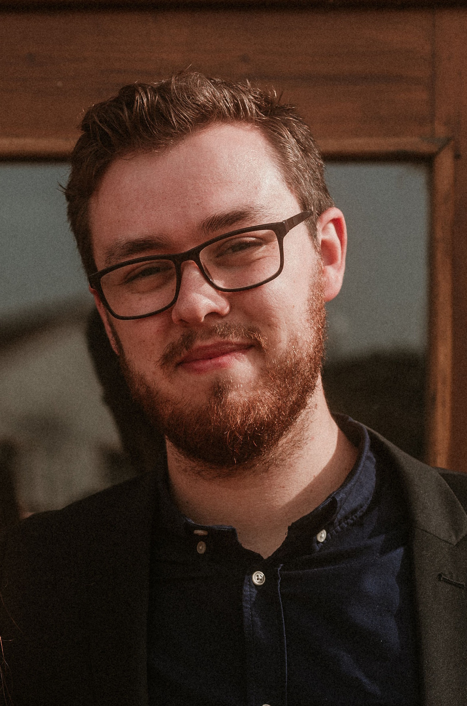
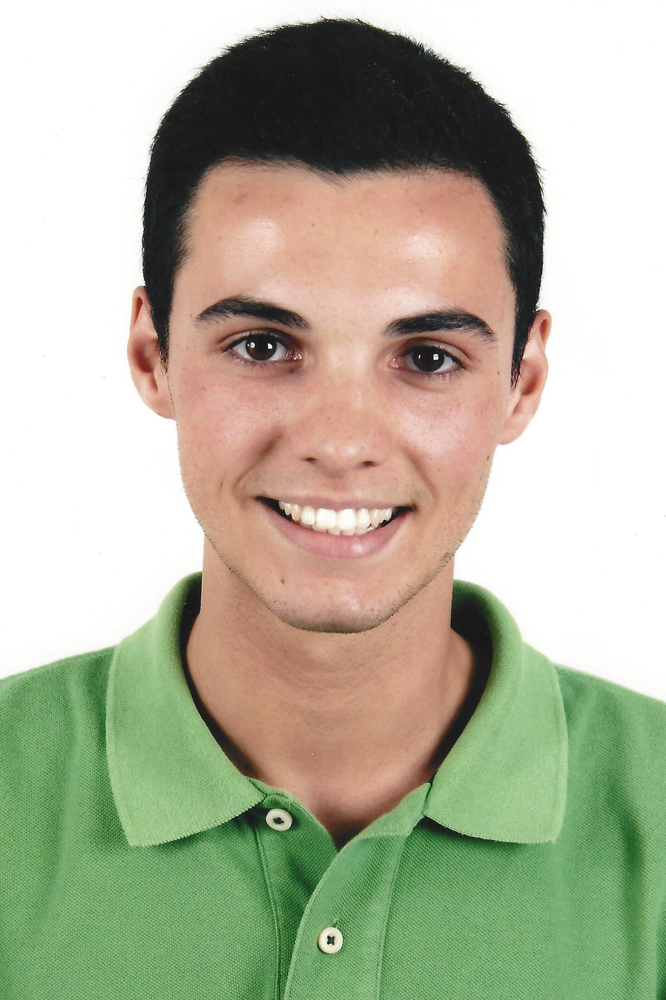
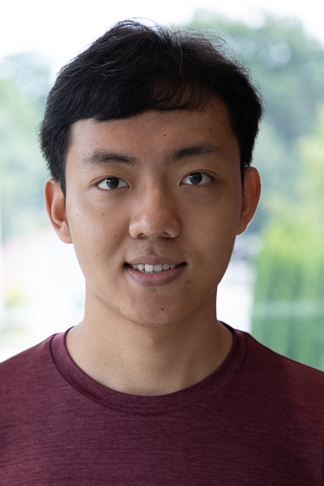
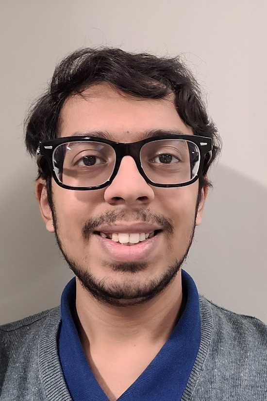
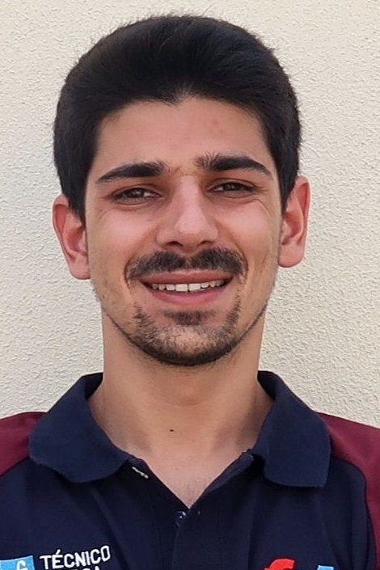
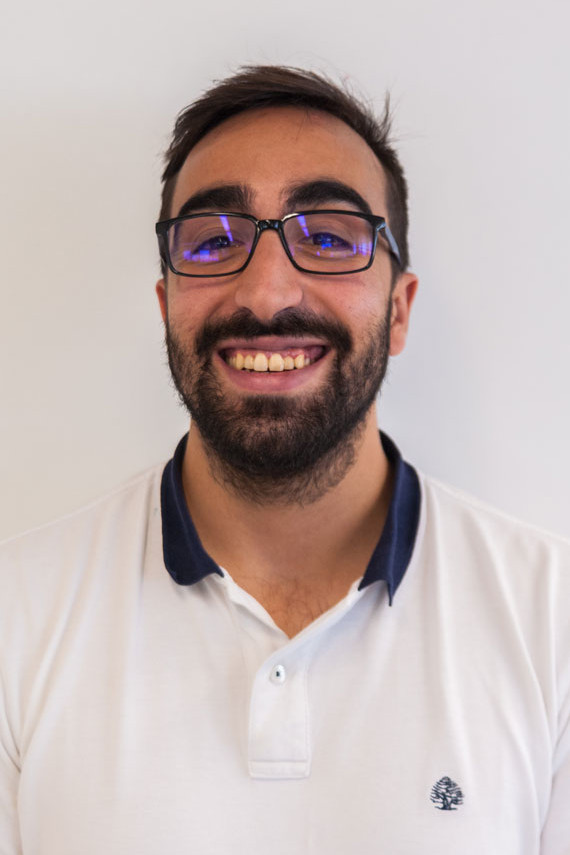
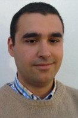
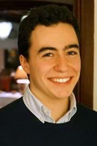
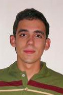
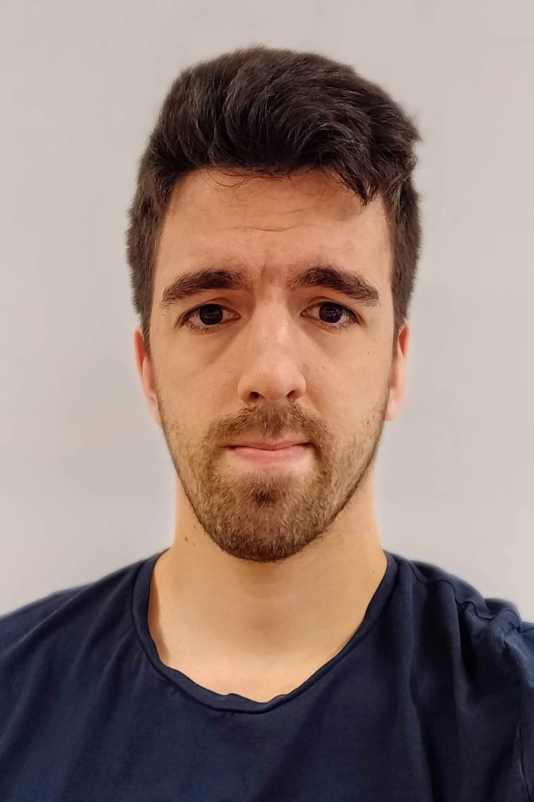

Andre Nogueira (IST)
2023-2027
PhD Students:


Valter Piedade (IST)
2022-2026
2022-2026
Interns at MERL:

Jiachen Liu (PSU)
2023
2023

Arihant Gaur (NIT)
2022
2022
Scholarship Grantees:

Luis Lopes (IST)
2020-2021
2020-2021

Tiago Dias (IST)
2015-2019
2015-2019

Joao Campos (IST)
2017-2018
2017-2018

Francisco Eiras (IST)
2017-2018
2017-2018

Romulo Rodrigues (IST)
2016-2017
2016-2017

Jose Iglesias (IST)
2015-2017
2015-2017
Master Students:
- [2021] Luís Lopes (ECE/IST), A SLAM Module for the Formula Student Competition;
- [2021] Diogo Morgado (ECE/IST), Labeling of Object in a Road Scene;
- [2021] Leonardo Cardoso (ECE/IST), Automatic vehicle and pedestrian labeling;
- [2021] Valter Piedade (ECE/IST), A robust and accurate method for counting vehicles;
- [2021] Diogo Oliveira (ECE/IST), Single Image Plane Reconstruction;
- [2020] Aldo Teran (ECE/KTH), Acoustic-Inertial Forward-Scan Sonar Simultaneous Localization and Mapping;
- [2020] Elisa Bin (ECE/KTH), MPC-based Visual Servo Control for UAVs;
- [2018] G. Dias Pais (ECE/IST), OmniDRL: Robust PD using omnidirectional cameras and deep RL;
- [2017] Soraia Ferreira (ECE/IST), Mobile Arm Visual Servoing for Object Manipulation;
- [2017] José Mendes (ECE/IST), Forensic use of Mobile Phone Cameras: Measuring the Height of a Person;
- [2016] Luis Luz (ECE/IST), Cooperative Perception for People Tracking and Human-Aware Navigation;
- [2016] Diogo Maximino (ECE/IST), Improvement of Non-Central Catadioptric Cameras Pose Estimation Using 3D Lines;
- [2015] João O'Neill (ECE/IST), Semantic Maps for Domestic Robots;
- [2015] António Ribeiro (ECE/UC), "Odometria Visual usando campos visuais não sobrepostos";
- [2014] Tiago Dias (ECE/UC), Augmented Reality using Non-Central Catadioptric Imaging Devices.